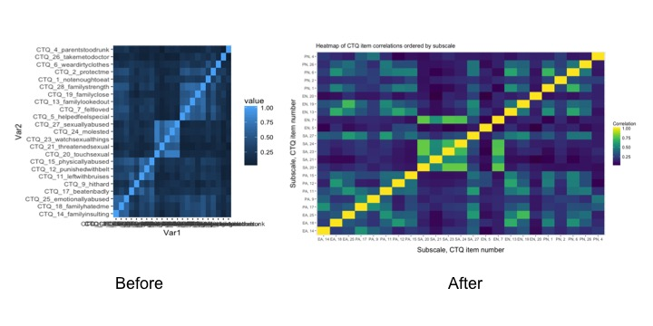
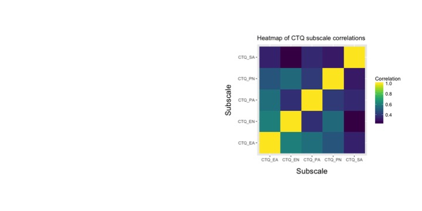
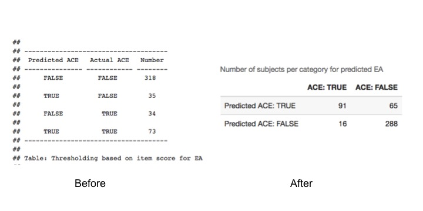
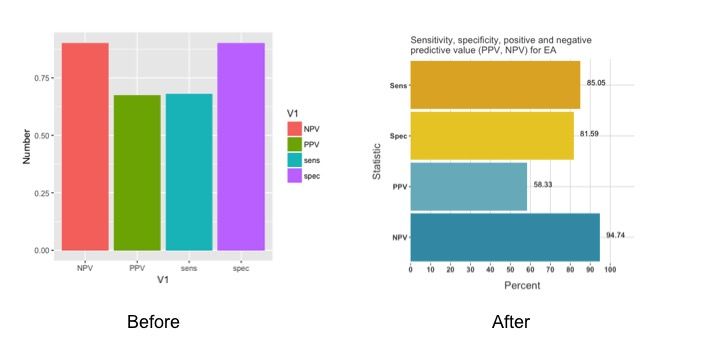
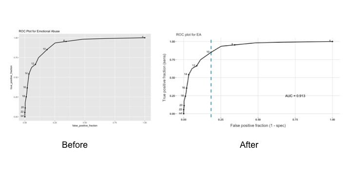

These four visualizations helped me make sense of the data. Not all of them made it to the final Shiny App. Not sure what I’m talking about? Check out my post here [bananas link!]

Before going about trying to convert between the CTQ and ACE survey, I wanted to make sure that items on the CTQ “hung together” within subscales. A heatmap organized by subscale that shows correlations between each CTQ item gives me a general sense of coherence within and between subscales. A simpler heatmap showing correlations between subscales (not items) further clarifies the strength of co-exposures to trauama in the sample.
The process of improving this graph included simplifying the item labels for legibility, clarifying labels and titles, and changing the color scale to better display the range of values. It also included completely accidentally making the simpler heatmap when trying to render the more complex one, and then going, “Hey, that seems useful, too!”

Still needs a figure caption exaplaining the subscale abbreviations, but hey – this one didn’t make the final app cut.

This table shows how changes in threshold impact the number of participants sorted by predicted ACE and actual ACE scores. I re-formatted the table in a 2 by 2 format that is commonly used in biomedical statistics, where the outcome (in this case, actual ACE endorsement) is indicated by True and False columns, while the drug or exposure (in this case, predicted ACE endorsement) is reflected by True and False rows.

This bar graph complements the table by showing changes in sensitivity, specificity, negative predictive value, and positive predictive value that correspond with the different number of participants in the true/false positive/negative categories.
Bar graphs are fairly straightforward, and this one doesn’t have any bells and whistles (i.e. error bars!) to contend with, since it’s about presenting actual values and not estimtes, so the goal was to make ’er sleek as a minx. I used a minimal aesthetic for legibility, including both gray major tick lines and actual printed percentages to help viewers note the values. I also used a color palette that emphasizes the pairing of sensitivity/specificity (in yellows) and PPV/NPV (in blues).

This graph demonstrates trade-offs in identifying true positives (sensitivity, on the y-axis) and false positives (1-specificity, on the x axis) as the threshold for converting the cumulative CTQ score into an ACE endorsement changes.
A transformation that is both sensitive and specific will present at close to a 90 degree angle along the top and left side of the graph, increasing the area under the curve. A test that is not useful diagnostically will look much more like a 45 degree angle, minimizing the area under the curve. Viewers can visually inspect the labels on the curve to select a threshold that appears to meet preferred specificity and sensitivity values.
To make this graph, I used the plotROC package and added features for aesthetics (minimal background) and clarity (new axis labels). I also added vertical and horizontal lines to help visualize the true and false positive rates for the chosen threshold.
All of the relevant code can be found on GitHub. Specifically, the heatmaps are available in “ctq_heatmaps.Rmd”, while the other relevant code for graphs 2-4 can be found in the Shiny format (app.R, helper.R) However, the graphs are not fully reproducible because I do not have permission to publically share the data. With permission from the original authors, I may be able to share the data so that y’all can run this jam solo.